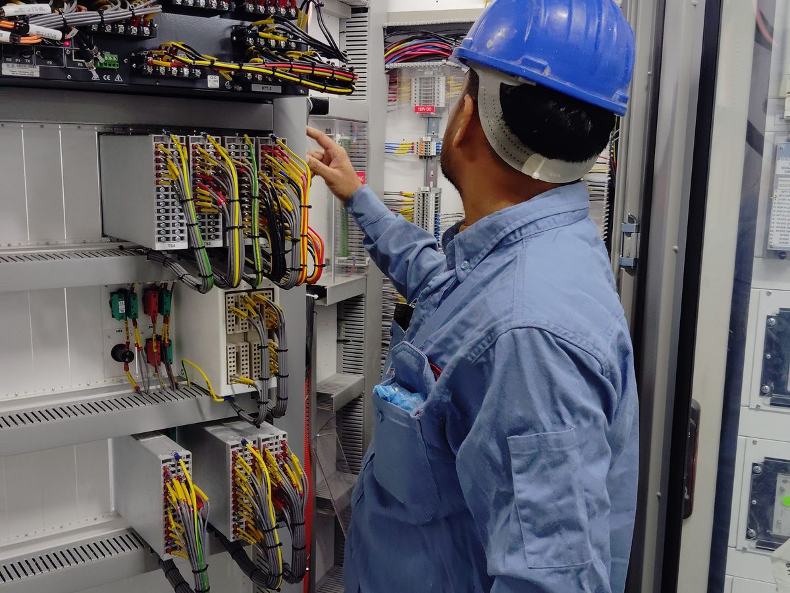
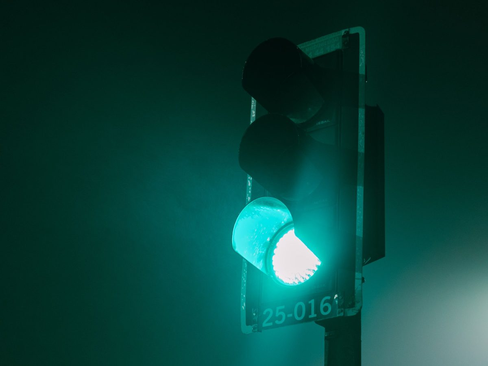

Controle semafórico · para municípios
Controle semafórico inteligente, fabricado na Paraíba.
Controladores, semáforos em LED e sistemas de gestão de tráfego produzidos pela Insiel em Campina Grande, com suporte técnico perto do município.
Produtos
Da esquina ao centro de controle.

Controladores semafóricos
Equipamento que comanda os grupos semafóricos do cruzamento, com planos por horário, sincronismo entre cruzamentos e diagnóstico de falhas.

Semáforos em LED
Focos veiculares e de pedestres em LED, com baixo consumo, alta visibilidade e vida útil muito superior à das lâmpadas incandescentes.

Controle inteligente de trânsito
Sistemas que integram os controladores em rede para monitorar, ajustar planos e responder a falhas a partir de um ponto central.
Para o município
Menos custo de operação, mais fluidez.
Economia de energia
O LED consome uma fração das lâmpadas convencionais.
Menos manutenção
Vida útil longa e diagnóstico remoto reduzem as saídas de equipe.
Gestão do tráfego
Planos por horário e sincronismo para reduzir filas e tempos de espera.
Fabricante na região
Suporte, peças e evolução do sistema a poucas horas do município.
Em operação
Sistemas semafóricos da Insiel estão implantados em cidades da Paraíba. [PREENCHER nomes das cidades, se autorizado]
Prefeituras e órgãos de trânsito
Fale com a área de trânsito da Insiel.
Conte a situação do município: quantos cruzamentos, o que está instalado hoje e o que precisa resolver. Retornamos com uma proposta técnica.
- Levantamento dos cruzamentos e diagnóstico do que existe.
- Proposta de modernização por etapas, se preciso.
- Documentação técnica para o processo de compra.